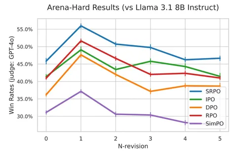

Сегодняшняя статья о Self-Improving Robust Preference Optimization (SRPO). Это алгоритм оффлайн-RLHF, подобный DPO, но более подходящий для off-policy датасета ранжирования. Кроме того, SRPO лучше переносится на OOD-задачи.
Основная идея метода заключается в состязательном обучении двух политик: генерирующей и улучшающей. Задача улучшающей политики — на основании запроса и имеющегося ответа создать улучшенную версию этого ответа; задача генерирующей — научиться создавать ответы, которые нельзя значительно улучшить.
Обе политики обучаются на парах предпочтений, полученных от людей. Решение состязательной задачи сводится к минимизации линейной комбинации из двух сонаправленных функций потерь. В работе показано, что оптимальное решение этой задачи не зависит от политики, из которой был собран датасет предпочтений. Благодаря этому SRPO оказывается более устойчивым к изменению в распределении данных.
Метод можно реализовать с помощью одной LLM, которая выступает и в качестве генератора, и в качестве «улучшатора». Обученную модель можно применять итеративно, каждый раз корректируя ответ, полученный на предыдущем шаге, чего не предполагают методы вроде DPO или IPO.
Даже без итераций, SRPO выигрывает у DPO и IPO: на сложных Arena-Hard-промптах метод показывает 56% win-rate. На задаче суммаризации Reddit TL;DR SRPO на 4-й итерации SRPO достигает максимального качества.
Разбор подготовил
Душный NLP
